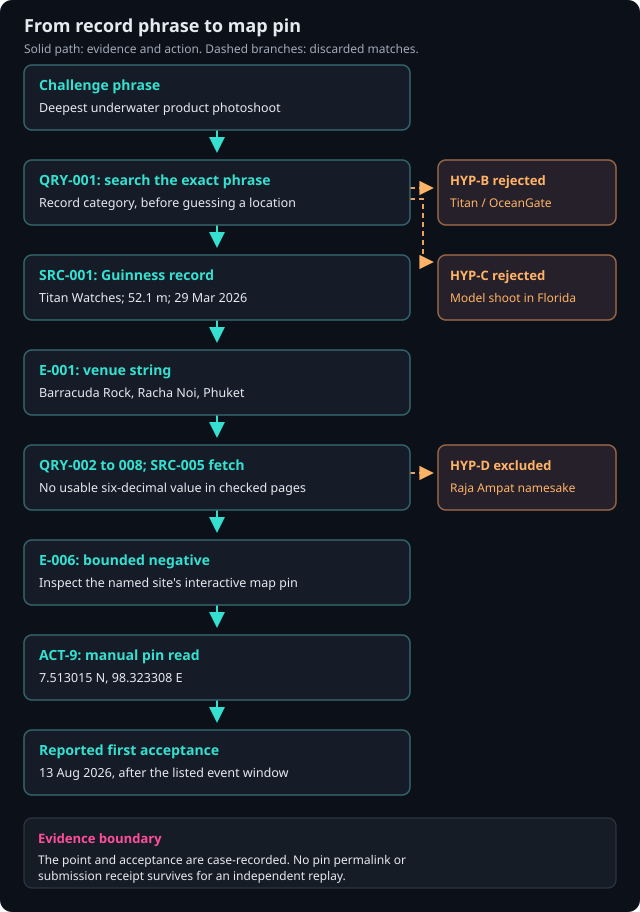

Abacus / Cyber Ops / CTF Writeups / OSINT / The Watch That Pointed to a Dive Site
The Watch That Pointed to a Dive Site
I expected to spend this one comparing maps. The event name settled in a single search; finding the exact pin took the rest of the work.
Summary
The challenge. Find the six-decimal coordinates of the location where the deepest underwater product photoshoot happened.
What I did. I searched the exact superlative, checked the issuing record, ruled out same-name sites, and read the relevant dive-site map pin.
The result. The case record reports first-attempt acceptance of scriptCTF{7.513015_98.323308} on August 13, 2026.
The limit. The submission receipt and original pin URL are unavailable for independent verification. The accepted point represents a map pin; its distance from the physical dive position is unknown.
Case details
| Field | Value |
|---|---|
| Category | Geo-OSINT (scriptCTF 2026) |
| Difficulty | Medium |
| Tags | OSINT, GEOINT, event-pivot, source-evaluation, geolocation, scriptCTF-2026 |
| Status | Solved-External |
| Recorded result | scriptCTF{7.513015_98.323308}, first-attempt acceptance reported for August 13, 2026. The event listing ended August 10. |
| Evidence boundary | The Guinness event record is independently visible. The pin read and platform acceptance are case-recorded; the pin URL and submission receipt are not available. |
Defensive and analyst proofs of concept for adapting this case to real environments: browse the GitHub artifacts folder.
This was a public-information CTF exercise. The geographic point below is a challenge answer and an approximate dive-site marker, not a verified position of the dive team.
1. Exercise Context and Tasking
The prompt called the challenge Titan and asked for the latitude and longitude, to six decimal places, of the place where the deepest underwater product photoshoot happened. Its example wrapper was scriptCTF{13.373737_-13.373737}. I had the prompt and no attached image or map.
The title tempted me toward the Titan submersible. The phrase "deepest underwater product photoshoot" was more specific. It sounded like a record title, so I treated the event as the first thing to identify. Coordinates were the requested output.
Exact requested answer. Latitude and longitude in decimal degrees, six places each, assembled as scriptCTF{lat_lon}.
Required precision. Six latitude decimals describe about 0.11 m of nominal resolution; longitude resolution is slightly smaller at this latitude. A dive site in open water cannot be located to that physical accuracy from a record title. The demand for six places told me to find the challenge author's point marker, as discussed in Section 5.4.
The CTF platform needed a formatted answer. I used an intelligence-requirement frame to keep the research organized, but the task did not involve a real-world operational decision.
I searched underlying public facts about the record and dive site rather than published challenge solutions. The case notes date the accepted submission to August 13, 2026. The event listing ends on August 10, so I do not present this as an in-competition score.
Information cutoff. The case's source-access dates are August 13, 2026. I checked the cited record and dive-site pages again while preparing this account; current page content can differ from the solve-time view.
The only CTF question was the coordinate request. The extra structure below records how I arrived there and where the answer's certainty ends.
2. Intelligence Requirements and Analytical Framing
I wrote one requirement for myself: identify the photoshoot site and obtain the six-decimal point the challenge expected. I broke it into four checks so I would not jump from a matching name to a guessed flag.
| ID | Essential Element of Information | Indicator | Status |
|---|---|---|---|
| EEI-01 | Identify the real-world event matching the superlative phrase | Verbatim record-category title match + "Titan" brand hint | Resolved - decisive |
| EEI-02 | Resolve the named venue to a mappable point | Existence of a named dive-site pin | Resolved - decisive |
| EEI-03 | Extract the exact 6-decimal values | Interactive map pin read | Resolved via documented manual terminal action |
| EEI-04 | Determine flag assembly rules | Hemisphere signs, separator, decimal padding | Resolved from challenge text + venue hemisphere |
Assumptions. I treated the coordinates as WGS84 decimal degrees and expected a public map pin to hold the exact decimals. The negative longitude in the example flag was a placeholder, not a hint about the venue's hemisphere.
At the start, I knew none of the event identity, venue, or coordinates.
I did not force D3A or F3EAD onto a one-answer CTF. They would have added a targeting frame with no decision to support. The four checks above were enough.
3. Collection Strategy, Tools, and Actions Taken
Phase 1 - Event identification. I searched deepest underwater product photoshoot verbatim. The Guinness World Records entry named Titan Watches, a 52.1 m shoot on March 29, 2026, at Barracuda Rock by Racha Noi Island, Phuket. Several trade articles repeated the campaign. One query disposed of my initial submersible association; the wording matched a record category and the brand matched Titan.
Phase 2 - Record check. I opened the issuing authority's page instead of relying on the press retellings. It confirmed the venue, date, and depth. It gave no coordinates, so I shifted from identifying the event to locating the point.
Phase 3 - Published-coordinate sweep. I ran seven more searches and fetched the SSI/Scubago Barracuda Rock entry. I checked dive databases, operators, general search, map indexes, and Thai-language terms. The bounded search did not turn up an indexed six-decimal point for the relevant pin. The Scubago page gave me a named dive site among Racha Noi sites, but its visible text did not supply the needed decimals. I did not treat the absence as proof that no published coordinate exists anywhere.
The dead ends mattered. "Barra Cuda Beach Club" in Patong polluted name searches. Raja Ampat, Indonesia, has another Barracuda Rock, and "Raja" is close enough to "Racha" to invite a bad match. A Guinness model photoshoot record pointed to Florida in 2024; the challenge asked about a product. Those checks pushed me toward a manual pin read, as explained in Section 5.3.
Phase 4 - Manual pin read. I selected the Barracuda Rock pin beside Ko Racha Noi and recorded 7.513015 N, 98.323308 E. I dropped hemisphere letters and degree marks for the flag. Section 10 gives the manual procedure. The case records first-attempt acceptance, although I do not have the pin URL or platform receipt to replay that step independently.
4. Source and Evidence Management
I kept stable identifiers for sources (SRC-###), evidence (E-###), observations (OBS-###), queries (QRY-###), actions (ACT-###), gaps (GAP-###), and judgments (KJ-##). The matrix below is the compact source register needed to follow this solve.
| ID | Type | Origin | Accessed | Supports | Independence |
|---|---|---|---|---|---|
| SRC-001 | Record registry (issuing authority) | Guinness World Records, record 783220 | 2026-08-13 | E-001..E-004 | Original / authoritative |
| SRC-002..004 | Trade press (MediaBrief, afaqs, Indian Television) | Titan PR + GWR | 2026-08-13 | Consistency only | Derivative - single PR origin, counted once |
| SRC-005 | Dive-industry database entry | SSI/Scubago, "Barracuda Rock" id 242681 | 2026-08-13 | E-005 | Independent of PR chain |
| SRC-006 | Record registry (rejected path) | GWR record 679971 (model photoshoot) | 2026-08-13 | HYP-C rejection | Original |
| SRC-007 | Dive-site guide (decoy documentation) | Bird's Head Seascape, Raja Ampat | 2026-08-13 | HYP-D rejection | Original (irrelevant site) |
Key evidence. E-001 is the Guinness venue string, "Barracuda Rock, Racha Noi Island, Phuket, Thailand." E-002 is the March 29, 2026 date; E-003 is the 52.1 m depth. My case notes also mention a five-diver team and roughly 20 minutes, details I did not reverify from the record page. E-004 identifies the Titan 500M Professional Diver's watch. E-005 is the named Scubago dive-site entry. E-006 records the narrower search result: my bounded queries found no indexed six-decimal value for the relevant pin.
I kept source URLs and access dates. I did not save a pin permalink or screenshot during the solve. That is a real gap in reproducing the coordinate extraction, even though the result was reported accepted.
The trade-press wave appears to share the same brand release and record announcement. I counted it once for corroboration. Repetition across mastheads did not make it independent evidence.
I omitted names of people quoted in press coverage because they did not help identify the event or the point. The source chain that matters to the answer stays visible.
5. Analytical Concept Explanation
5.1 Superlative-record pivots. The wording sounded like a record category. I searched the full phrase first and reached the issuing record in one step. Search rank did not authenticate the answer; the Guinness page did. A similarly phrased challenge can still have more than one candidate, so I checked the holder, date, and venue before moving on.
5.2 Source independence vs. press waves. Several articles repeated the same brand and record story. I treated that wave as one line of reporting. The SSI dive-site entry had a different purpose and supported the existence of a same-named site in the Racha Noi area; I cannot establish from the visible page when its listing was created or how the point was sourced. I did not count it as independent proof of the exact six decimals.
5.3 Negative-space inference. My bounded sweep found the name but no indexed six-decimal value I could use. That result made an interactive map pin a sensible next source. It did not prove that every operator, map index, or language lacked coordinates. The query log in Section 10 shows the scope of the negative result.
5.4 Coordinate-precision semantics. Six decimals can describe a point to roughly 0.11 m north-south, but a map pin is not a surveyed dive-team position. The requested precision told me I needed a stored coordinate value, not a hand-drawn estimate of where the boat sat. Once I found the site, I looked for its pin.
5.5 Entity disambiguation under name collision. "Barracuda Rock" brought up a Patong beach club and a Raja Ampat dive site. I kept the Guinness venue string beside every candidate: Racha Noi Island, Phuket, Thailand. The Indonesia result was a name match and a location mismatch, however tempting the "Raja"/"Racha" similarity looked.
6. Analysis Mechanics
Step 1. The challenge wanted coordinates but described an event. I put the full photoshoot phrase into search before trying to place "Titan" on a map.
Step 2. QRY-001 returned SRC-001, the Guinness record, along with a press wave. Guinness named Titan Watches and Barracuda Rock. That supported HYP-A and let me drop the submersible idea, HYP-B. The adjacent model record failed the category check for HYP-C.
Step 3. I fetched SRC-001 and wrote down E-001 through E-004: the venue, date, depth, and watch. The exact venue string became the key for the next searches. It also stopped me from treating a press paraphrase as the primary record.
Step 4. QRY-002 through QRY-008 and the SRC-005 fetch located a named dive-site entry but no usable indexed decimals in the sources checked. I recorded that as E-006, a bounded negative. OBS-4 was my inference that an interactive pin might contain the precise value, so I went to the map.
Step 5. ACT-9 was the manual pin read: 7.513015 N, 98.323308 E. I assembled the answer under EEI-04. The case records first-attempt acceptance on August 13. That supports the flag string, while the missing receipt and pin permalink limit independent checking.
Shortest path through the evidence: challenge phrase -> SRC-001 (E-001) -> pin read (ACT-9) -> scriptCTF{7.513015_98.323308}.
7. Alternative Hypotheses and Decision Forks
| Hypothesis | Initial rationale | Contradicting / diagnostic evidence | Disposition |
|---|---|---|---|
| HYP-A - "Titan" = Titan Watches (Tata) | Superlative + brandable marketing event | GWR attribution names the brand | Survives - confirmed |
| HYP-B - "Titan" = Titanic wreck / OceanGate Titan | Strongest cultural prior for "Titan" + extreme depth | No product-photoshoot record there; GWR resolves elsewhere | Rejected at Step 2 |
| HYP-C - Venue = Haining record site (Pompano Beach, FL) | Adjacent GWR record surfaced by the same query | Category is model photoshoot - answer-ontology mismatch | Rejected - ontology discipline |
| HYP-D - Target pin = Raja Ampat "Barracuda Rock" | Exact name match in a dive-site guide | Wrong country and hemisphere vs. E-001 | Rejected - retained as decoy warning |
| HYP-E - Author's pin platform = Google Maps (vs. SSI map object) | Only interactive sources exist; default solver tooling | First-submission acceptance made disambiguation moot | Survives, unresolved and immaterial |
Decision forks.
FORK-1. I could have followed the first association that "Titan" gave me. The record phrase had more discriminating detail, so I searched it and reached the right event in one query.
FORK-2. I spent seven queries looking for published decimals before reading the pin. A shorter sweep would probably have served the CTF better. The failed searches still show exactly why I changed sources.
FORK-3. I kept challenge-solution searches out of the collection path. The record and dive-site sources answered the question without them. The dated acceptance falls after the listed event window, so I describe it as a recorded platform result, not competition scoring.
8. Key Judgments and Productized Intelligence
KJ-01: The event referenced by the challenge is the Titan Watches (Tata Group) Guinness World Record for deepest underwater product photoshoot: 52.1 m at Barracuda Rock, Racha Noi Island, Phuket, Thailand, on 29 March 2026.
Confidence: High. Basis: Record-issuing authority (SRC-001), with a consistent - though derivative - press wave and independent confirmation that the venue exists as a named dive site (SRC-005). Alternative: None surviving. Gap: None material.
KJ-02: The flag coordinates 7.513015 N / 98.323308 E correspond to the named dive-site pin for that venue.
Confidence: High in the recorded accepted flag; lower in independently reproducing the exact pin extraction. Basis: ACT-9 pin read and case-reported platform acceptance. My bounded search made the pin a reasonable next source, but it did not independently supply those decimals. Alternative: An alternate pin platform holding a different value - rendered moot by acceptance. Gap: Whether the pin matches the dive team's physical position on 2026-03-29 (academic; see Section 12).
The event summary in Sections 1-9 answers the CTF question and keeps the source and coordinate limits visible. It is a training artifact, not an official intelligence product.
9. GEOINT / IMINT Product
The geography mattered when I checked the candidate site and assembled the coordinates. I did not analyze an image, so I have no annotated or comparison imagery to present. The exact point below is the accepted CTF answer as recorded, with pin-level uncertainty.
| Item | Value |
|---|---|
| Area of interest | Ko Racha Noi vicinity, Phuket province, Thailand |
| Final coordinates (accepted) | 7.513015 N, 98.323308 E |
| CRS | WGS84 (EPSG:4326), decimal degrees |
| Stated precision | Six decimals, about 0.11 m north-south in numerical resolution; physical accuracy is unknown |
| Positional uncertainty | Pin-level; relationship to the dive team's physical anchor point is unverified (GAP-03) |
| Analyst sanity bound (inferred, low precision) | 7.39-7.52 N, 98.25-98.35 E |
| Calibration note | The accepted point sits ~0.007 degrees (~775 m) inside the bound's northern edge - the bound held but nearly clipped the true point; treat memory-derived bounds as fail-open filters |
I kept a machine-readable GeoJSON point, in longitude/latitude order. It carries the same provenance warning. The data below is the point, not a surveyed dive location.
{
"type": "Feature",
"geometry": { "type": "Point", "coordinates": [98.323308, 7.513015] },
"properties": {
"name": "Barracuda Rock CTF answer point",
"source": "case-recorded interactive pin read, 2026-08-13",
"uncertainty": "pin-level; physical dive position unknown"
}
}
I did not need a static map to tell this story. If I add one later, I will use a licensed tile source with attribution and keep the point's uncertainty visible.
10. Reproducible Queries, Scripts, and Technical Artifacts
I kept the queries in execution order. The Thai-language query is preserved because that route was part of the bounded search, even though it did not produce the six-decimal point.
QRY-001 deepest underwater product photoshoot
FETCH-1 https://www.guinnessworldrecords.com/world-records/783220-Deepest-underwater-product-photoshoot
QRY-002 Barracuda Rock Racha Noi dive site coordinates
FETCH-2 https://www.scubago.com/en/explore/divesite/barracuda-rock-242681
QRY-003 "Barracuda Rock" Racha Noi GPS coordinates latitude longitude
QRY-004 "Barracuda Rock" Phuket mapcarta
QRY-005 dive.site "Barracuda Rock" Racha Noi Thailand
QRY-006 Barracuda Rock Racha Noi google maps location
QRY-007 Barracuda Rock Racha Noi 7.4 98 coordinates dive spot
QRY-008 หินบาราคูด้า ราชาน้อย พิกัด ดำน้ำ # Thai: "Barracuda Rock Racha Noi coordinates diving"
QRY-003 through QRY-008 and FETCH-2 did not yield a usable indexed coordinate. E-006 describes that bounded search result; it cannot rule out every public source.
ACT-9 - manual map action.
- Search "Barracuda Rock" in an interactive map and select the dive-site pin beside Ko Racha Noi, Phuket. Reject the Patong beach club and other countries using the record's venue string (Section 5.5).
- Read the selected pin's coordinates. If the map offers both displayed coordinates and a place URL containing latitude/longitude parameters, compare them. Save the direct pin link; I did not capture it in this case.
- Assemble
scriptCTF{<lat>_<lon>}with N/E as positive values, an underscore, and exactly six decimal places. Leave out degree signs and hemisphere letters.
My first sanity check below caught formatting and obvious geographic mistakes. Its bound was an estimate and nearly excluded the accepted point. I kept the short version to show my solve-time thinking. The linked coordinate checker uses explicit input errors instead of assert, leaves out-of-bound candidates available for review, and has tests.
# Solve-time sketch. The linked checker has input validation and CLI arguments.
BOUND = {"lat": (7.39, 7.52), "lon": (98.25, 98.35)} # analyst-inferred, low precision
def check(lat: float, lon: float) -> None:
assert -90 <= lat <= 90 and -180 <= lon <= 180, "not a plausible coordinate"
in_bound = (BOUND["lat"][0] <= lat <= BOUND["lat"][1]
and BOUND["lon"][0] <= lon <= BOUND["lon"][1])
print(f"candidate : {lat:.6f}, {lon:.6f}")
print(f"within bound : {in_bound} (fail-open: re-verify bound before rejecting)")
print(f"flag candidate : scriptCTF{{{lat:.6f}_{lon:.6f}}}") # :.6f enforces zero-padding
if __name__ == "__main__":
check(7.513015, 98.323308)
11. Analytic Standards and Methodology Mapping
| Method / Standard | Application | Artifact proving application |
|---|---|---|
| Analytic standards, informed by ICD 203 (quality-control lens) | Observation/interpretation separation; confidence expressed without invented probabilities | Section 6, Section 12 |
| Sourcing standards, informed by ICD 206 | Source register with access dates, origin, and independence classification; derivative press counted once | Section 4 |
| Hypothesis management, adapted from ACH | Explicit register with diagnostic evidence; decoys retained after resolution | Section 7 |
| Collection management (discriminating-indicator prioritization) | Phrase-first strategy; bounded sweep with a pre-committed pivot condition; language-expansion query | Section 3, Section 10 |
| Negative-result tracking | E-006 records the bounded unsuccessful coordinate search that drove FORK-2 | Section 3 Phase 3, Section 6 Step 4 |
I borrowed useful habits from ICD 203 and ICD 206: distinguish observation from judgment, keep source origins visible, and state the gaps. The hypothesis table is an ACH-inspired aid. This CTF note is not an official intelligence product or a compliance claim. The table points to where I used each habit.
12. Source Evaluation, Confidence, and Intelligence Gaps
Source quality. SRC-001 is the record issuer and directly supports the event, date, depth, and venue. SRC-005 lists a same-named dive site in the Phuket/Racha Noi context; its visible text does not supply the answer's decimals. SRC-002 through SRC-004 repeat the brand story and count as one press origin. SRC-006 and SRC-007 were useful for rejecting plausible wrong matches.
Information credibility. The event and venue are strongly supported by the record issuer. The coordinate value rests on the recorded pin read and reported platform acceptance; I do not have a captured pin URL or receipt. My bounded search found no other usable decimals.
Analytic confidence. KJ-01 is high because the issuer names the event and place. KJ-02 is high for the recorded CTF answer and lower for independently replaying the pin extraction. Those are judgments about specific evidence, not numerical probabilities.
Intelligence gaps.
| Gap | Status | Could it overturn the principal judgment? |
|---|---|---|
| GAP-01 - exact pin decimals | Closed in the case record by ACT-9 and reported acceptance; external replay unavailable | A different verified pin could change the answer, so retain the missing permalink as a reproducibility gap |
| GAP-02 - challenge author's pin platform | Unresolved; acceptance made it unnecessary for the CTF | No known impact on the reported accepted flag |
| GAP-03 - pin vs. physical dive position | Open | No impact on flag formatting; matters if the point is reused as a real-world location claim |
13. Lessons Learned and Practitioner Development
What the exercise validated
The exact phrase got me to the event in one search. The unsuccessful coordinate sweep was useful because I recorded its scope and changed sources when it stopped paying off. I had a rejection ladder ready but never needed it; the case records acceptance on the first try. I used a manual pin read to obtain the requested decimals instead of pretending a rough geographic estimate was precise enough.
What produced friction
I expected a named dive site to have an indexed coordinate. The pages I checked did not yield the six decimals. The Patong beach club kept appearing in name searches, and my remembered latitude bound nearly cut off the point: it sat about 0.007 degrees below the upper edge.
What would change next time
Next time I would cap the published-coordinate sweep at three or four well-chosen queries, then inspect the pin. I would save the pin's direct URL or permitted capture at the moment I read it. A bound from memory stays a warning, never a reason to discard a candidate.
Transferable principles
| Exercise Behavior | Professional Analytic Principle |
|---|---|
| Preserve exact search queries, including negatives | Maintain reproducible collection records |
| Count a simultaneous press wave as one origin | Circular-reporting control |
| Record a structured negative as a finding (E-006) | Disciplined absence-of-evidence reasoning |
| Document the GUI terminal action step-by-step | Auditability of manual tradecraft |
| Discriminate name collisions with geographic bounds | Entity-resolution discipline |
| Retain rejected hypotheses after validation | Hindsight-bias reduction |
14. Reusable Analyst Assets
Asset 1 - Coordinate-flag pre-submission checklist (generalized). Determine hemisphere signs from the actual site. Check the wrapper and underscore. Pad each coordinate to six places without inventing more source precision. Leave out degree marks and hemisphere letters. Record the datum assumption. The coordinate checker handles the syntax; the analyst still has to identify the correct point.
Asset 2 - Rejection delta ladder template. Before a submission, I would decide what a rejection would mean: recheck the exact pin value and rounding, compare a second pin platform, then revisit the selected feature and the event category. The case did not use this ladder after the first answer. A rejection should trigger a specific evidence check, not random coordinate changes.
Asset 3 - Superlative-pivot collection pattern. Search the record-like phrase verbatim. Verify the result at its issuing registry, note the exact venue string, and treat articles sourced from one press release as one origin. Then resolve the place separately. I turned that sequence into a source review template.
Asset 4 - coordinate checker. The short solve-time check appears in Section 10. The linked reusable checker, test suite, and usage guide make its fail-open bound behavior explicit. They do not validate a map or submit to a CTF platform.
15. Cross-Challenge Capability Mapping
I kept an event-level row so this solve can be compared with other OSINT work:
| Challenge | IR | Primary discipline | Techniques | Tools | Product | Confidence | Result |
|---|---|---|---|---|---|---|---|
| Titan | Event-referenced venue -> six-decimal coordinates | OSINT (GEOINT supporting) | Record-category search; bounded negative; name-collision checks; Thai-language query; source-origin review | Web search/fetch, record registry, dive DBs, interactive map | OSINT event summary | High for event; recorded acceptance for flag | Solved, first submission reported |
This small comparison records technique practice across Titan and the separate Where on Earth? challenge. Its counts describe the two exercises, not a broader portfolio total.
| Technique | Where on Earth? | Titan | Times Practiced |
|---|---|---|---|
| Visual geolocation (imagery-driven) | X | 1 | |
| Event-pivot record-registry search | X | 1 | |
| Negative-space provenance inference | X | 1 | |
| Entity disambiguation / name collision | X | 1 | |
| Multilingual collection | X | 1 | |
| Answer-ontology and flag-format discipline | X | X | 2 |
16. Visual Intelligence Artifact
The analysis flow near the top gives the short version. This fuller diagram keeps the rejected routes and evidence IDs in view. It is a standalone SVG that displays without a diagram renderer. A map with one pin would hide more of the work than it explained.


The Mermaid source is below for reuse.
flowchart TD
A["Challenge phrase:<br/>'deepest underwater product photoshoot'"] --> B["QRY-001 verbatim phrase search"]
B --> C["SRC-001 GWR record 783220<br/>Titan Watches, 52.1 m, 29 Mar 2026"]
C --> D["E-001 venue string:<br/>Barracuda Rock, Racha Noi Island, Phuket, TH"]
D --> E["QRY-002..008 + SRC-005 fetch<br/>published-coordinate sweep"]
E -->|"bounded negative (E-006)"| F["Inference: a map pin may hold<br/>the needed decimals"]
F --> G["ACT-9 manual pin read<br/>7.513015 N, 98.323308 E"]
G --> H["First submission reported accepted<br/>2026-08-13, after event window"]
B -.->|"rejected: HYP-B"| X1["Titanic / OceanGate reading"]
B -.->|"rejected: HYP-C"| X2["GWR model-photoshoot record"]
E -.->|"decoy excluded: HYP-D"| X3["Raja Ampat 'Barracuda Rock'"]
Artifact metadata. SRC-001 through SRC-007 appear in Section 4 with August 13 access dates. No imagery underlies the diagram. The final point assumes WGS84 and has pin-level uncertainty, as explained in Section 9 and the linked GeoJSON.
17. After-Action Review
| Item | Value |
|---|---|
| Time to first viable hypothesis | Minutes - one query (QRY-001) |
| Time to correct judgment | Same session: venue immediate; coordinates after an eight-action sweep plus one manual step |
| Highest-value source | SRC-001 (GWR record page - issuing authority) |
| Lowest-value collection path | General-web decimal-string searches (QRY-003, QRY-007) - pure SEO noise |
| Major pivot | Published-source sweep -> interactive-pin extraction, licensed by E-006 |
| Assumption causing the most friction | "A named dive site will have published decimals"; secondarily, a memory-derived bound that nearly clipped the true point |
| Tool deficiency | Text retrieval did not expose map-pin coordinates, so I used a manual pin read; the direct pin link was not preserved |
| Knowledge deficiency | None material; local Thai naming for the site remained unverified (did not affect outcome) |
| Confidence at submission | High on venue; the numeric string carried no independent pre-validation - by design, its first test was submission |
| Submission correct? | First-attempt acceptance recorded for August 13; independent receipt unavailable and event listing ended August 10 |
| Evidence that would have improved pre-submission confidence | Any indexed pin mirror (OSM node, Mapcarta page) or an operator-published GPS log |
| Training follow-up | Map the coverage boundaries of pin-mirror sources (OSM/Mapcarta/legacy GPS lists) for marine POIs; practice extracting coordinates from embedded map objects for GAP-02-type contingencies |
I kept the near-clipped bound in the record. It shows why a remembered geographic range should prompt a second look, never veto a candidate.
18. Release Review
| Check | Status |
|---|---|
| Challenge publication timing | The event listing ended August 10, 2026. This article is published afterward; no organizer-specific writeup restriction was verified. |
| Flag and challenge identifiers | The case-recorded flag appears here because it is the answer being explained. Its reported acceptance occurred after the listed event window. |
| Real-world unnecessary PII | None - individuals quoted in press coverage omitted from the body |
| API keys / tokens / account identifiers | None present |
| Workstation paths / usernames | None present |
| EXIF leakage | N/A - no images published |
| Copyrighted imagery | None used; future map insets to use OSM tiles with attribution |
| Map licensing / attribution | Noted in Section 9 and Section 16 |
| Source URLs defeating anonymization | Not applicable - the challenge is named per CTF convention and sources are public news/registry pages |
| Government affiliation / operational implication | This is a CTF exercise and makes no operational or official-intelligence claim |
19. References
Methodology / Doctrine References
- ODNI ICD 203, Analytic Standards - a quality-control lens for separating observations, assumptions, and judgments; this CTF note does not claim compliance.
- ODNI ICD 206, Sourcing Requirements - informed the source-origin and independence fields. The directive's formal requirements do not apply to this personal page.
- Heuer, R. J., Psychology of Intelligence Analysis - the hypothesis table borrows the idea of testing alternatives in a compact CTF form.
Analytical Sources
Primary preferred over aggregators throughout; the press wave is listed as derivative.
- Guinness World Records record 783220, Deepest underwater product photoshoot, the issuing event record.
- Guinness World Records record 679971, Deepest underwater model photoshoot, the rejected category match.
- SSI/Scubago, Barracuda Rock site 242681, a dive-site listing in the Phuket/Racha Noi context; its visible text does not establish the exact flag point.
- MediaBrief, afaqs, and Indian Television trade coverage of the Titan Zero Hour campaign, treated as derivative coverage of one announcement.
- Bird's Head Seascape, Barracuda Rock, the rejected Raja Ampat name match.
- CTFtime scriptCTF 2026 event listing, for the August 8-10 event window and writeup-prize context.